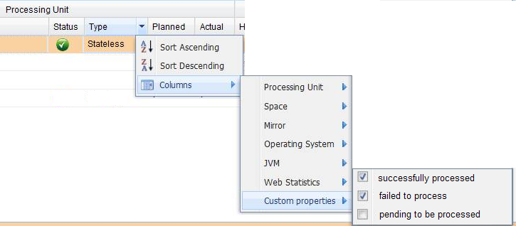

A Processing Unit can implement the ServiceDetailsProvider and ServiceMonitorsProvider interfaces to expose information to calling APIs or to be viewable in the Web Management Console.
A ServiceDetails describes static information the processing unit would like to expose. This is fetched only once in the life-cycle of the processing unit, usually when it starts up.
One implementation class a processing unit can extend is the PlainServiceDetails class. This is a simple straight forward implementation of the ServiceDetails interface, which takes care of fast serialization using Externalizable, provides a handy toString, etc.
The ServiceDetails are used to describe the service being monitored.
A ServiceMonitors describes runtime information the processing unit would like to expose. This is fetched periodically using the Administration and Monitoring API.
One implementation class a processing unit can extend is the PlainServiceMonitors class. This is a simple straight forward implementation of the ServiceMonitors interface, which takes care of fast serialization using Externalizable, provides a handy toString, etc.
public interface ServiceMonitors extends Serializable {
String getId();
ServiceDetails getDetails();
Map<String, Object> getMonitors();
}
Notice that the ServiceMonitors.getDetails() provides the Service Details. When using PlainServiceMonitors the details are set with the initial value fetched when the processing unit instance was discovered.
You can also extends the CustomServiceMonitors in order to get your own monitoring:
public class MyMonitor extends CustomServiceMonitors {
public MyMonitor() {
this("mymonitor");
}
public MyMonitor(String id) {
super(id);
getMonitors().put("myvalue1", new Long(1));
getMonitors().put("myvalue2", new Long(2));
}
}
public class SystemServiceMonitors implements ServiceMonitorsProvider {
Logger log = Logger.getLogger("SystemServiceMonitors");
public SystemServiceMonitors() {
log.info("CONSTRUCTOR");
}
@PostConstruct
public void init() {
log.info("init");
}
public ServiceMonitors[] getServicesMonitors() {
log.info("getServiceMonitors");
return new ServiceMonitors[] { new MyMonitor("myMonitor") };
}
}
public class AdminTest {
public static void main(String[] args) {
Admin admin = new AdminFactory().addGroup("my_oup").createAdmin();
ProcessingUnit pu = admin.getProcessingUnits()
.waitFor("ServiceMonitor");
ProcessingUnitInstance[] puInstances = pu.getInstances();
System.out.println("puInstance :" + puInstances[0].getName());
Map<String, ServiceMonitors> monitors = puInstances[0].getStatistics()
.getMonitors();
System.out.println(monitors.keySet());
System.out.println(monitors.values());
admin.close();
}
}
For the service monitors to be shown in the Web Management Console, a bean class which is declared in your processing unit's pu.xml should extend one or both of the CustomServiceDetails and CustomServiceMonitors interfaces. The system will expose the data provided by these interface via the admin API and the web based dashboard.
CustomServiceDetails and CustomServiceMonitors must have same id. Both of them must have default constructor.
The String keys of the ServiceMonitors.getMonitors() Map are shown in the web based dashboard as custom properties (e.g. "successfully processed", "failed to process", "pending processing").
